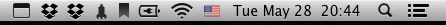

Toggle the Bluetooth menu item with AppleScript
I like to keep my menubar as uncluttered as possible, so I keep as many items hidden as possible—especially system programs like Time Machine, the displays menu, or the volume menu.

I also keep the Bluetooth menu turned off. However, when the battery runs low on either my keyboard or mouse, the Bluetooth menu item comes back, and it doesn’t turn back off after the batteries get replaced. The only way to turn it off is to go to the Bluetooth panel in System Preferences and disable the menu item manually. It’s a tiny chore, but a chore nonetheless. One that can be automated!12
Save this to an AppleScript application (or an Automator application) and run to (kludgingly) toggle the Bluetooth menu item.
tell application "System Preferences"
activate
set the current pane to pane "Bluetooth"
delay 1
end tell
tell application "System Events"
tell process "System Preferences"
set toggleBluetooth to the checkbox "Show Bluetooth in menu bar" of the window "Bluetooth"
click toggleBluetooth
end tell
end tell
tell application "System Preferences"
quit
end tell
-
See this fantastic graph originally posted by Bruno Oliviera. ↩︎
-
And by spending 15 minutes figuring out the hidden Applescript API for System Preferences to automate a task that takes up 30 seconds every month, I totally saved time in the long run. ↩︎
{kind=link}